Here are descriptions of some of the more interesting or significant changes made to the Java development tools (JDT) for the 4.32 release of Eclipse. They are grouped into:
See also the Eclipse Platform What's New document for changes in the Platform.
We also recommend to read the Tips and Tricks.
Java Editor |
|
| Split try-with-resources |
A new quick assist has been added to allow splitting resources from a try-with-resources into an inner try-with-resources. All resources from the point of the split are added to the new inner try-with-resources statement. The assist is offered when CTRL+1 is clicked while some part of a resource statement in the try-with-resources is selected.
For example, in the following example, we can select part of the second resources statement: 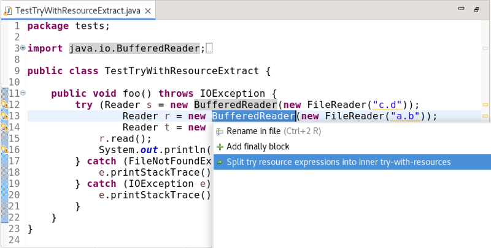 and choose to split from that point: 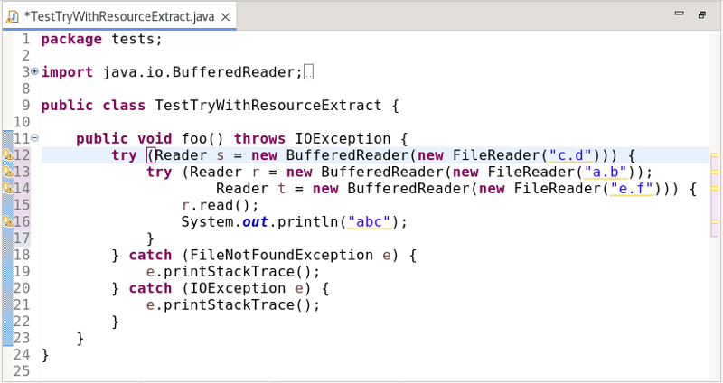 |
| String concat to formatted text block |
The quick assists to convert a mixed string concatenatation of literals and variables into a MessageFormat or String.format call have been enhanced to use a text block when using Java 15 or greater. This is useful when there is purposeful alignment of the line indentation of the concatenation (e.g. a code snippet).
For example, in the following example: 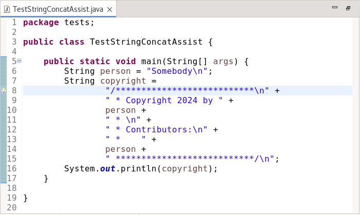 If we use CTRL+1 with the cursor in the concatenation and choose Use 'MessageFormat' for string concatenation we get: 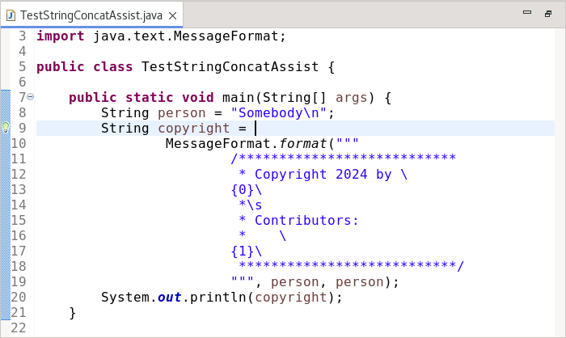 or if we choose Use 'String.format' for string concatenation we get: 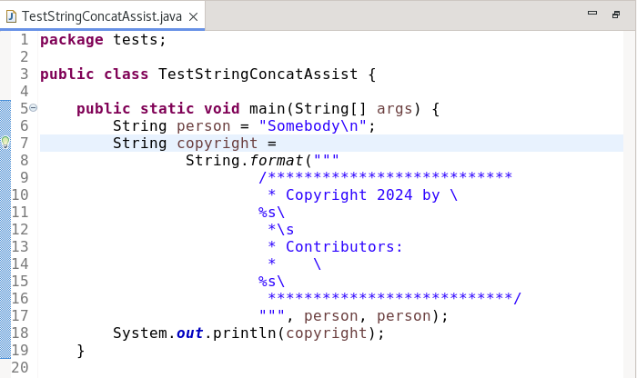 |
| Combine declaration and assignment |
The Remove overridden assignment cleanup found in the Unnecessary Code tab of the clean-up configuration dialog has been enhanced to combine a variable declaration that is immediately followed by an assignment into a declaration with assignment.
For example, the following: 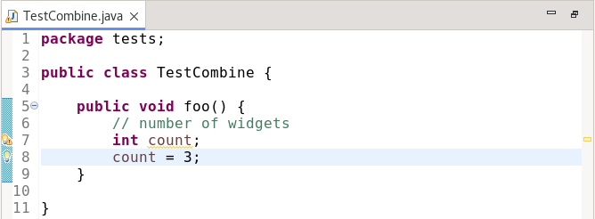 will be transformed into: 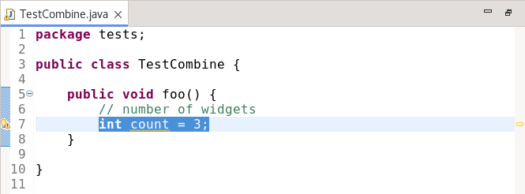 |
| Extract anonymous class to local variable |
A new quick-assist has been added to extract an anonymous class implementation to a local variable. To use, click on CTRL+1 with the cursor within the anonymous class.
For example:
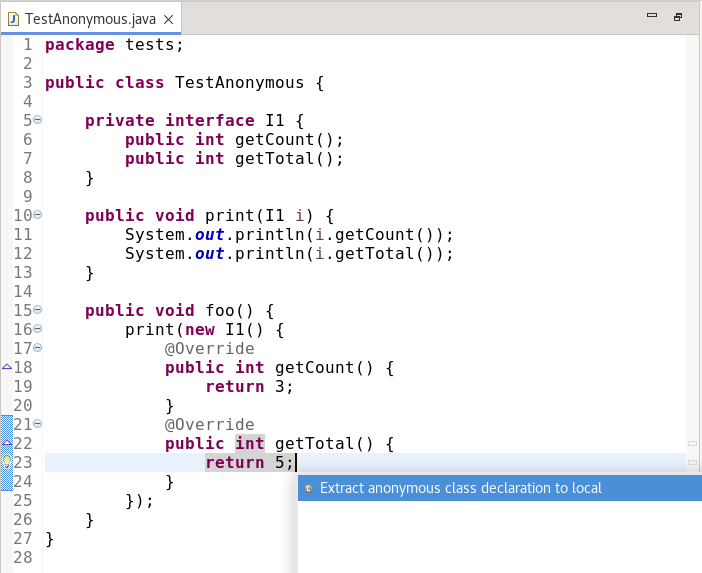 Results in: 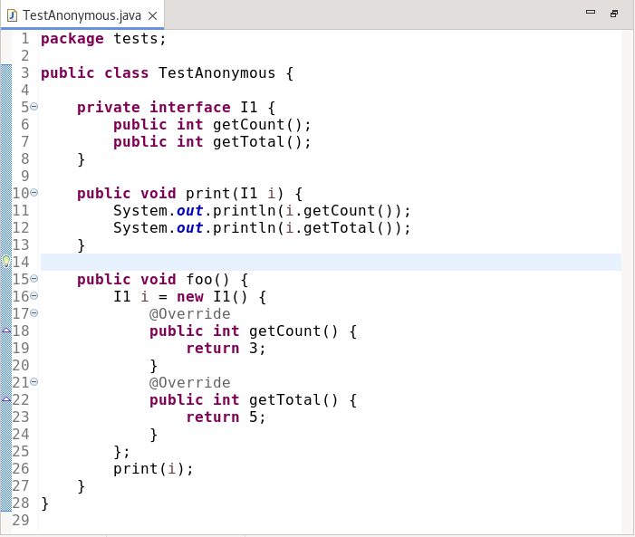 |
| Types call Hierarchy on Ctrl+Click |
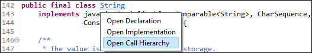 |
Java Views and Dialogs |
|
| Javadoc styling improvements |
Styling of the method signatures displayed in the Javadoc view and hover dialog has been improved to make them easier
to read.
Until now, the entire signature has been rendered as one continuous text making it a bit hard to identify specific parts. This is especially difficult when the signature contained type variables of generic declarations: 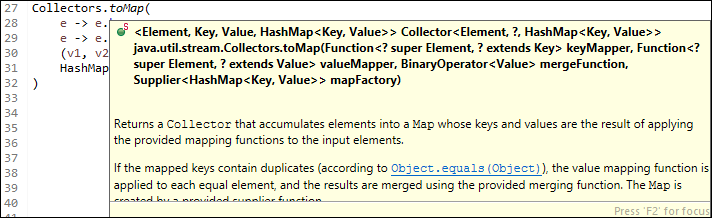 Now, by default, parts of the signature are visually distinguished by using italic, lighter, or colorized text or by placing them on separate lines.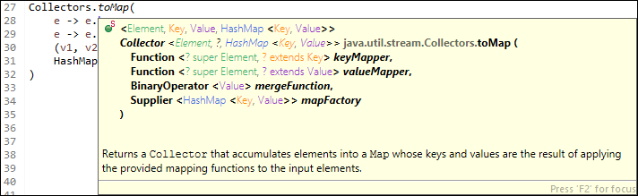 Coloring is used to distinguish different types used as type variables. Four different colors are pre-configured and are also re-used repeatedly in case more unique types are present in displayed Javadoc. Note: custom colors can be configured to avoid this repetition. All aspects of the new styling can be customized through the Javadoc styling menu accessible via a new menu button added to the toolbar of the Javadoc view and Javadoc hover (here visible after pressing F2), where the button itself toggles the new styling functionality on/off. 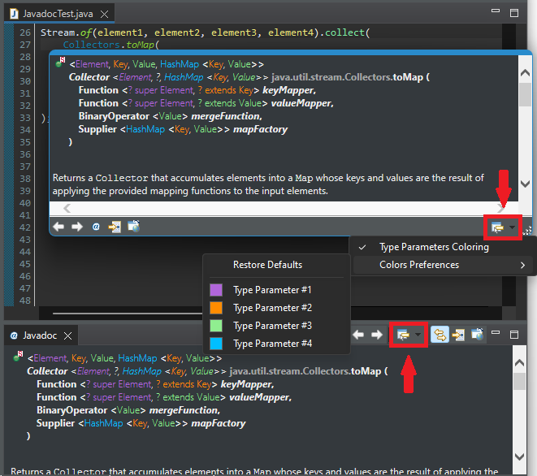 |
| Enable encapsulating multiple fields from a single dialog |
It is now possible to encapsulate multiple fields of a class and its references in other classes by invoking Refactor > Encapsulate Fields... on that class.
The new dialog looks like this: 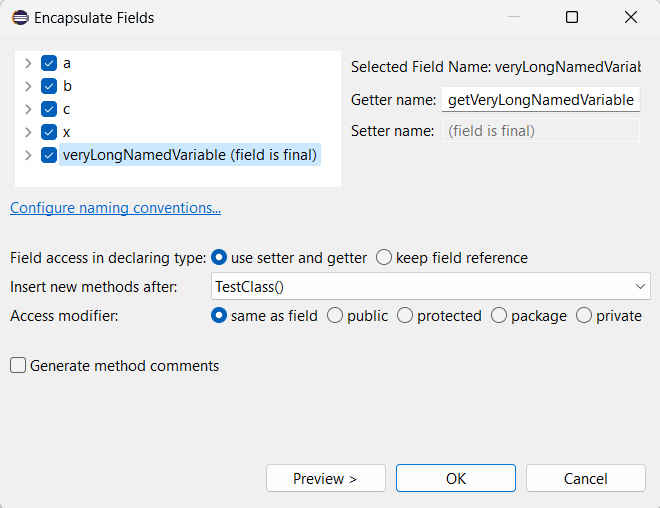 The Encapsulate Fields option can be accessed either by the menu bar > Refactor or by right clicking while hovering over any field. The dialog now consists of a tree where you can check all the fields that need to be encapsulated along with their getter and setter. You can now select Same as field (default option) as the access modifier for the generated getters and setters. The operation would have the following results as displayed in the example below: 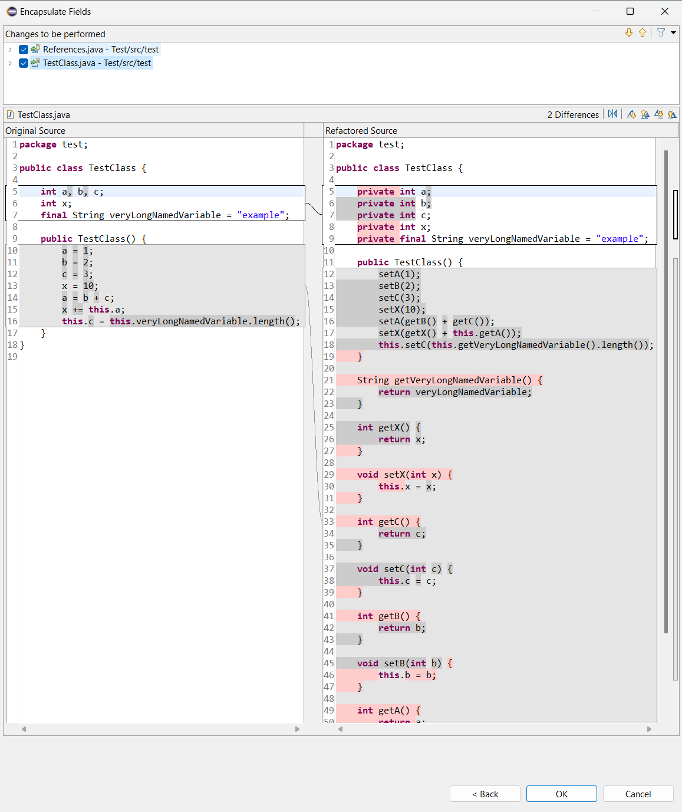 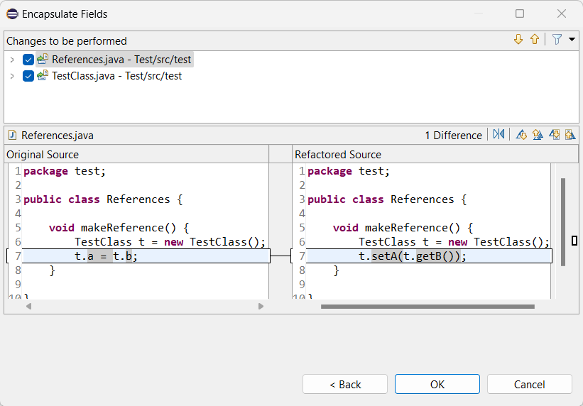 |